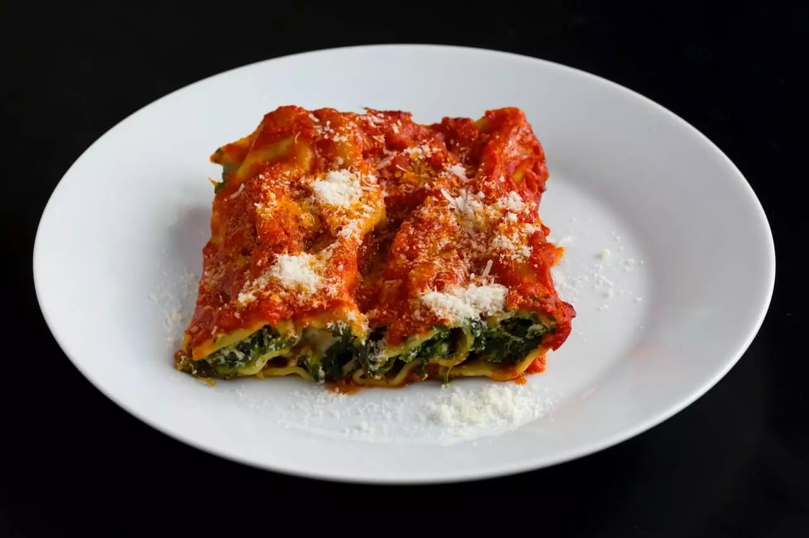
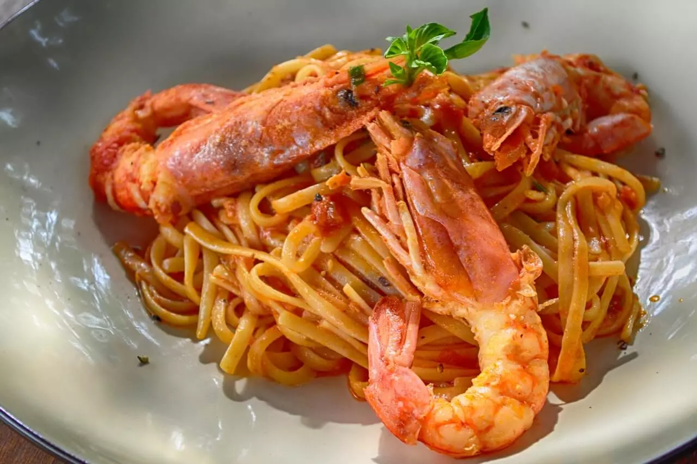

Recipe #1:
Green Cannelloni
Ingredients
To make the Cannelloni:
Details
- Cost: Medium
- Difficulty: Low
- Preparation Time: 30 min
- Cooking Time: 45 min
- Servings: 4 people
Preparation
Green Cannelloni, or also known as “Cannelloni Ricotta and Spinach” is a classic Italian Recipe that can bring your family together for a yummy Sunday lunch. This recipe substitutes the traditional bechamel with a tomatoes sauce giving your dishes an irresistible taste and lightness. The success of your meal is guaranteed!!!
To prepare the Cannelloni:
- Wash your spinach thoroughly.
- Drain well and stir fry in a pan with oil and garlic. Season to your liking.
- Once done leave it to rest.
- In a small pot, sauté the onion with some olive oil, add the tomatoes sauce, salt and pepper and let it cook until ready.
- Mix the Spinach with the Ricotta Cheese and the egg until smooth. Add salt and pepper and a pitch of nutmeg if you like it.
- Open the cannelloni package and fill each one with the mix or ricotta and spinach with a table spoon.
- Place each filled cannelloni in a tray and cover with the tomatoes sauce and mozzarella.
- Place the fresh basil as decoration on top.
- Bake for 40 minutes at 220°.
- Enjoy while still hot.
Recipe Tips:
You can substitute the spinach with different types of leave and add grated Parmesan Cheese to the filling for extra taste! The cannelloni can be saved in the fridge for 1 to 2 days.
X

Recipe #2:
Prawn Noodles
Ingredients
To make 4 serving portions:
Details
- Cost: High
- Difficulty: Medium
- Preparation Time: 35 min
- Cooking Time: 15 min
- Servings: 4 people
Preparation
If you are in need of a fresh taste dish, with a quick turnaround, you should try the prawn noodle. This homemade stir-fried dish is packed with flavor and will leave you with a full sense of satisfaction! You will come back for more!
To prepare the Prawn Noodles:
- Mix together the soy and oyster sauce.
- Cook the noodles following instructions on the package, drain and set aside.
- Meanwhile, sauté the onions with the sesame oil, then add the baby tomatoes and the red pepper finely chopped.
- Add the mild curry powder, you can add ginger and garlic if you like.
- Cook for few minutes.
- Add the prawns and fry for a minute, then add the sauce mix and finally the noodles.
- Heat through.
- Serve and enjoy!
Recipe Tips:
You can add peanuts or cashew on top your noodle for extra flavor and coriander for garnish. Sprinkles of lime on top of your dish will make it even more yummy!
X
Recipe #3:
Gnocchi with Pesto
Ingredients
To make the basil pesto:
For the Gnocchi:
Details
- Cost: Low
- Difficulty: Low
- Preparation Time: 15 min
- Cooking Time: 15 min
- Servings: 4 people
Preparation
If you are in a hurry but still looking for something to melt your taste buds then Gnocchi with pesto is the right choice for you. This is a delicious Italian main, easy to make which will bring you to a carb heaven.
To prepare the Pesto:
- Unpack and wash the basil leaves thoroughly.
- Put the basil, in a blender or mini food processor and whirl until chopped.
- Add the grated Parmesan-Reggiano cheese, the garlic, the pine nuts and the olive oil and blend until smoothed.
- Add seasoning to your taste and extra olive oil if too dry, continue whirling until well blended.
- Cover and refrigerate if not used immediately.
For the gnocchi:
- Boil a large pot of water.
- When boiling add salt to your taste.
- Unpack the potato gnocchi and cook them following package instructions. The gnocchi will be ready when floating to the top.
- Drain the gnocchi.
- Mix the gnocchi with the pesto sauce.
- Add parmesan on top to your taste.
Recipe Tips:
You can mix the basil leaves with spinach and/or rucola if you want to make your pesto extra delicious! The pesto can be prepared in advanced and be frozen for future usage.
X